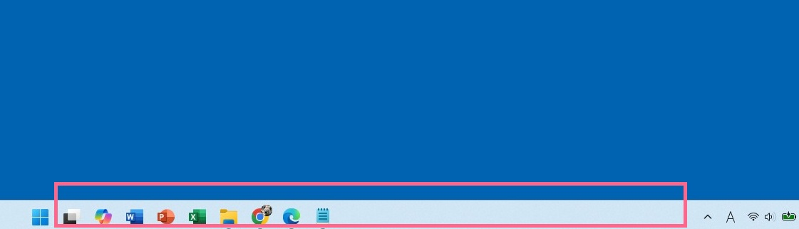
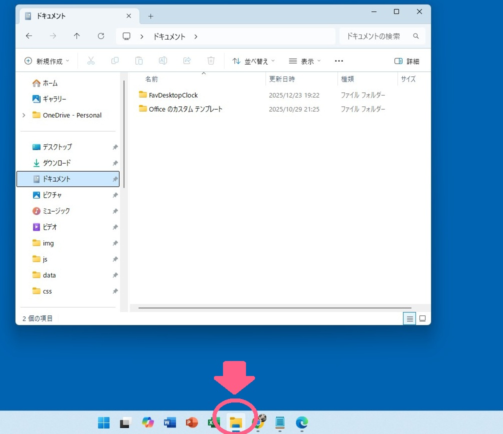
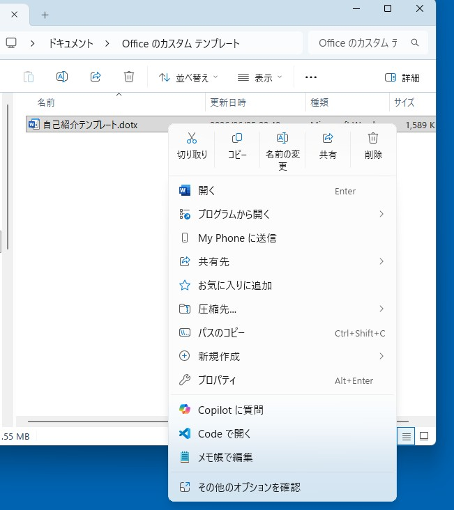
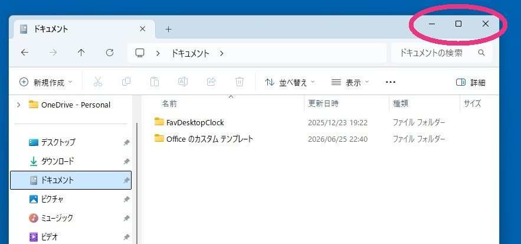
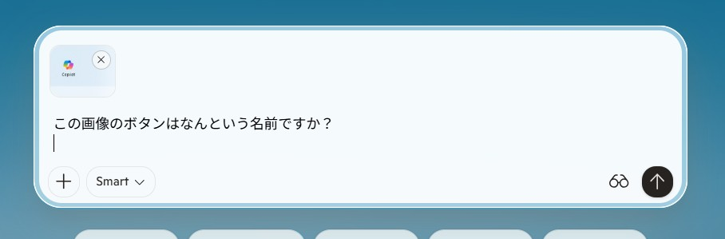
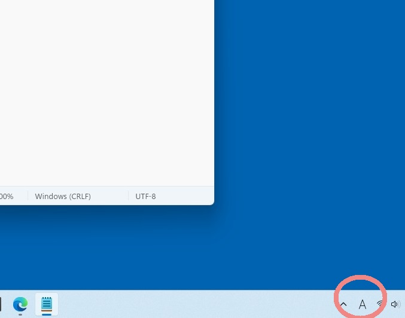
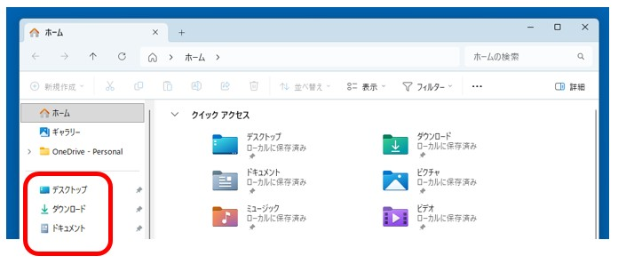
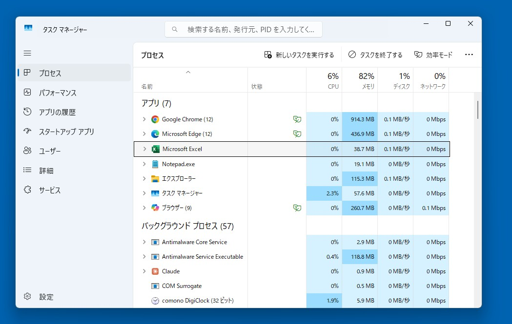
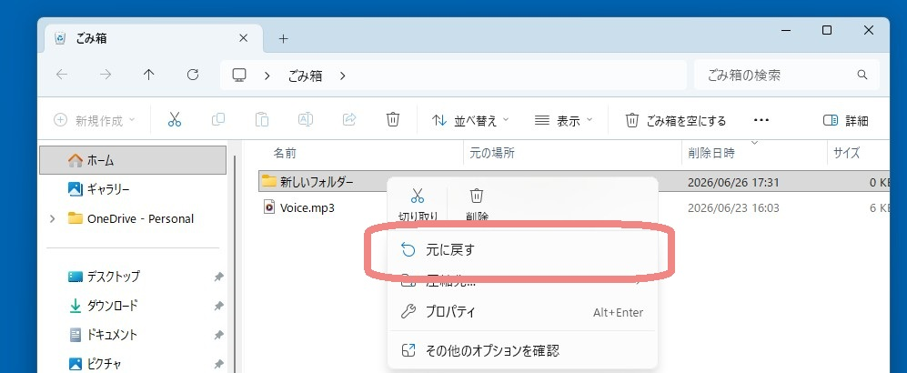

Windowsの基礎知識
初心者が最初に覚えたい基本操作
ぱそトレ！先生からのアドバイス
「タイピングの練習、お疲れ様です！次はパソコンを動かすための基本ルール『Windows（ウィンドウズ）』の番です。一見地味に感じるかもしれませんが、ここで学ぶ『ファイルやフォルダの扱い』は、この先のWordやExcel、そして最新のAI活用を使いこなすための、文字通り一生モノの『土台』になります。焦らず、一つずつ自分のものにしていきましょうね。」
※2026年6月時点の情報です
この記事では現在主流のWindows 11を基準に、初心者が実務で困らないための必須知識を網羅しています。Windows 10を使用している場合でも操作の考え方は共通ですので、安心して読み進めてください。
WordやExcelを勉強する前に、まず覚えておきたいのがWindows（ウィンドウズ）の基本操作です。
「保存したファイルが見つからない」「画面が消えてしまった」「Excelが固まった」……こうしたパソコン初心者の悩みの多くは、Windowsの基礎を知ることで解決できます。ここでは、仕事や日常の実務で本当によく使う操作だけを厳選して紹介します。
まず覚えたいWindowsの基本画面
パソコンを起動して最初に目にする画面や、常に表示されているバーの名前を正しく覚えましょう。これらはすべての操作の出発点になります。
デスクトップとは？
パソコンを起動したときの背景画面全体のことです。現実の机でいう「天板」のようなもので、よく使う書類（ファイル）を一時的に置いたり、作業を行う場所になります。
タスクバーとは？
画面の一番下にある細長いバーです。今開いているソフトのアイコンが表示されます。

画面下の赤枠で囲まれた部分が「タスクバー」です💡 講師のアドバイス：よく使うソフトは「ピン留め」を
WordやExcelなど毎日使うソフトは、タスクバーにあるアイコンを右クリックして「タスクバーにピン留めする」を選んでおきましょう。いつでも一発で起動できるので非常に便利です。
エクスプローラーとは？
フォルダの中身を見たり、ファイルを整理したりするための「管理専用ソフト」です。タスクバーにある「黄色いフォルダの形をしたアイコン」が目印です。

エクスプローラーを使えば、パソコンの中にある書類や写真を一覧で確認できます。フォルダとは？
ファイルを分類してまとめて入れておく「書類の引き出し」のようなものです。フォルダの中にさらにフォルダ（子フォルダ）を作ることもできます。
💡 講師のアドバイス：後で困らないフォルダ整理術
仕事では「案件別」「月別」「提出用」などフォルダを細かく分ける習慣を最初につけましょう。「とりあえずデスクトップ」に保存する癖をなくすだけで、数ヶ月後にファイルを探す手間が劇的に減りますよ。
知っておくと困らない基本操作
マウス操作一つでできる、Windows特有の動きをマスターしましょう。
ドラッグ＆ドロップ
アイコンをマウスで左クリックしたまま動かし、目的の場所で指を離す操作です。ファイルをフォルダへ移動させたり、メールに添付したりするときに多用します。
右クリック（魔法のメニュー）
「このファイルをどう扱えばいいか分からない」ときは、対象の上で右クリックしてみましょう。その時に実行できるメニューが表示されます。

右クリックを使うと、その対象に対して「今できること」がズラリと表示されます。ファイル名の変更
ファイルを選択してキーボードの F2 を押すか、右クリックから「名前の変更」を選びます。
💡 講師のアドバイス：「Book1」のまま放置しない
「新しいフォルダ」や「Book1」といった名前のまま放置せず、「20260621_報告書」のように、日付と内容をセットで名付ける習慣をつけましょう。
ウィンドウ操作を覚えよう
ソフトを開いた時に出る「窓（ウィンドウ）」の正しい扱い方です。右上の3つのボタンを使い分けます。

画面右上の「ー・□・×」ボタンを使い分けて、画面を使いやすく整理しましょう。- 最小化（ー）： 画面を消さずに、一旦タスクバーの中に隠します。作業を中断する時に使います。
- 最大化（□）： 画面いっぱいに広げて、作業しやすくします。
- 閉じる（×）： そのソフトを完全に終了します。
複数の画面を切り替える（Alt ＋ Tab）
実務では複数の画面を行き来することが多いです。そんな時、キーボードの Alt を押しながら Tab を押すと、開いている画面を一瞬で切り替えられます。
💡 講師のアドバイス：仕事効率が劇的に上がるショートカット
Alt ＋ Tab を使いこなせると、マウスでいちいち下のバーをクリックする必要がなくなり、作業スピードが数倍に跳ね上がります。
画面を写真に撮る（スクリーンショット）
今の画面を画像として保存する方法です。AIに質問する時や、操作で困って誰かに相談したい時に非常に役立ちます。Windowsでは主に以下の2つの方法を使います。
- Windows ＋ Shift ＋ S ： 【推奨】Windowsの標準機能を使って、画面の好きな範囲をマウスで囲って切り取ることができます。
- PrintScreen ： ボタンを1回押すだけで画面全体を写せますが、表示しているサイトによってはセキュリティの関係で撮影が制限されている場合があります。
※Windowsキーとは、キーボードの左下にある、窓のロゴマークが描かれたキーのことです。
💡 セキュリティへの配慮
画面を撮影する際は、パスワード、住所、氏名などが映り込んでいないか確認しましょう。これはAIに限らず、大切な「情報の守り方」です。ご自身のプライバシーを保護するために、画像を送る前のちょっとした確認を習慣にしましょう。
撮影した画像は、ChatGPTなどの入力欄で Ctrl ＋ V を押すだけで、そのままAIに見せながら質問ができます。

撮影した画像を貼り付ければ、エラーの内容なども正確に相談できます。💡 講師からのアドバイス▶ 「特定のサイトでボタンが反応しない時は、パソコンの故障ではありません。そんな時でも Windows ＋ Shift ＋ S を試してみてくださいね。」
これだけは覚えたい重要ショートカットキー
マウス操作を極限まで減らし、指先で操作を完結させる魔法の組み合わせです。
- ✅ Ctrl ＋ C ： コピー（選択範囲を写し取る）
- ✅ Ctrl ＋ V ： 貼り付け（コピーしたものを出す）
- ✅ Ctrl ＋ X ： 切り取り（移動させるために切り取る）
- ✅ Ctrl ＋ Z ： 元に戻す（直前の操作を取り消す）
- ✅ Ctrl ＋ A ： 全選択（すべて選ぶ）
💡 講師のアドバイス：まずは「3つ」から始めましょう
初心者がまず覚えるべきは Ctrl を使った C（コピー）、V（貼り付け）、Z（元に戻す） の3つだけ。これだけで、パソコン操作の疲れが半分になります。
文字入力がおかしくなったときの対処
英語しか入力できない、日本語にならない
キーボードの左上にある 半角/全角 を1回押してください。画面右下の時計の横にある表示が「あ」になれば日本語が打てます。
「あ」と「A」の表示を見分ける
ここが「A」になっていると英語しか打てません。入力がおかしいと思ったら、まずはここを見る癖をつけましょう。

右下の文字をマウスでクリックすることでも切り替えられます。💡 講師のアドバイス：落ち着いて「右下」を見れば解決
初心者が一番焦るのが入力トラブルです。落ち着いて右下のアイコンをチェック。それだけで解決する問題が9割です。
保存したファイルが見つからないとき
初心者がファイルを「なくした」と感じる場所は、大抵この3箇所のどこかです。
- デスクトップ： 背景画面に置きっぱなしにしていないか確認。
- ドキュメント： 標準的な保存用フォルダです。
- ダウンロード： インターネットから保存したものは自動でここに入ります。

左側のメニューから、よく使う場所へ一瞬で移動できます。「最近使ったファイル」から探す
エクスプローラーを開くと一番上に「最近使用した項目」が表示されます。直前に作業していたものならここから一発で開けます。
💡 講師のアドバイス：「どこに置いたか」を意識する
「保存」ボタンを押す瞬間、一呼吸おいて画面の左側（保存先）を見るようにしましょう。
パソコンが固まった（フリーズした）とき
マウスが動かない、画面が動かない……そんな時、いきなり電源ボタンを長押しして強制終了するのはやめましょう。
タスクマネージャーを呼び出す（Ctrl ＋ Shift ＋ Esc）
この3つのキー Ctrl ＋ Shift ＋ Esc を同時に押すと管理画面が開きます。固まっているソフトの名前を選んで「タスクを終了」を押せば解決できます。

どうしても動かないソフトは、ここから強制的に終了させることができます。💡 講師のアドバイス：電源長押しは「最後の手段」
電源ボタンの長押しは人間でいう「気絶」させるようなもの。まずはタスクマネージャーを試す。この「待ち」の時間が、実はパソコンを長持ちさせる秘訣です。
間違えて削除してしまったときは？
大切なファイルを消してしまっても、Windowsでは一旦「ごみ箱」という一時保管所に移動するだけです。
ごみ箱から元に戻す手順
デスクトップにある「ごみ箱」をダブルクリックで開き、戻したいファイルの上で右クリックして「元に戻す」を選べば、元の場所へ自動で帰ります。

「元に戻す」を選べば、ファイルは消える前のフォルダに自動的に戻ります。Windows基本操作のよくある質問（FAQ）
Q. 保存したはずのファイルがどうしても見つかりません。
A. エクスプローラーの右上にある「検索ボックス」に、ファイル名の一部を入力してみてください。パソコン全体から探してくれます。
Q. 日本語入力ができなくなりました（英語しか出ない）。
A. ほとんどの場合、キーボードの 半角/全角 を1回押すだけで解決します。
Q. Excelが「応答なし」になって固まりました。どうすれば？
A. Ctrl + Shift + Esc でタスクマネージャーを開き、Excelを強制終了させましょう。
Q. ショートカットキーは全部覚えないといけませんか？
A. いいえ。まずは Ctrl + C（コピー）と Ctrl + V（貼り付け）の2つだけで十分です。
まとめ：土台ができれば次へ進めます
Windowsの基礎は、これからWordやExcel、そしてAIを自在に使いこなすための大切な「土台」です。一度にすべてを完璧にする必要はありません。
まずは「フォルダ管理」「右クリック」「コピー＆ペースト」の3つを意識するだけで、パソコンへの恐怖心がなくなり、実務への自信に大きく繋がります。操作に慣れてきたら、いよいよ実務の王道「Word・Excel」の世界へ進みましょう！